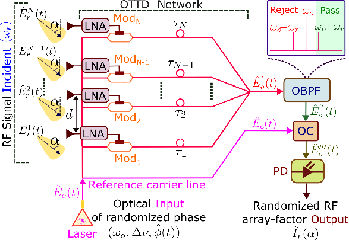
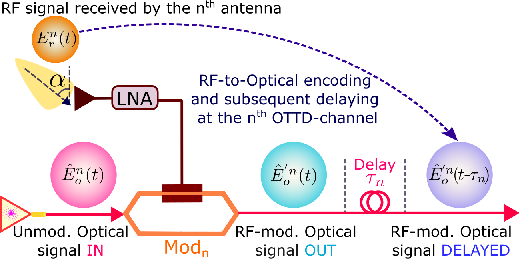
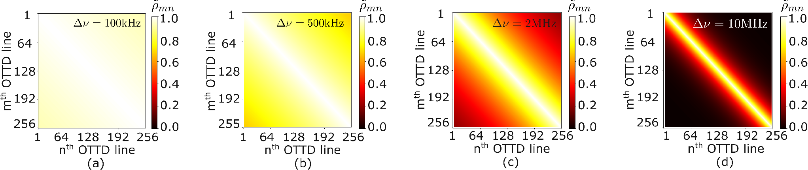
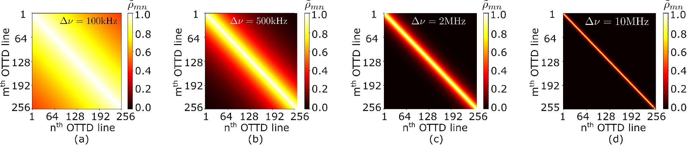
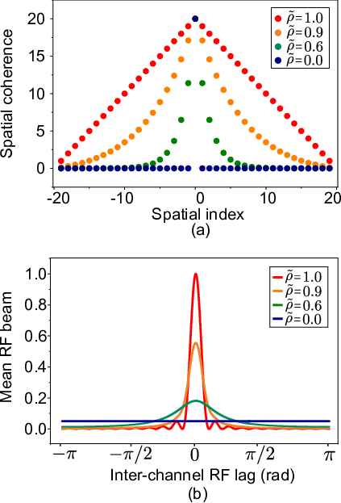
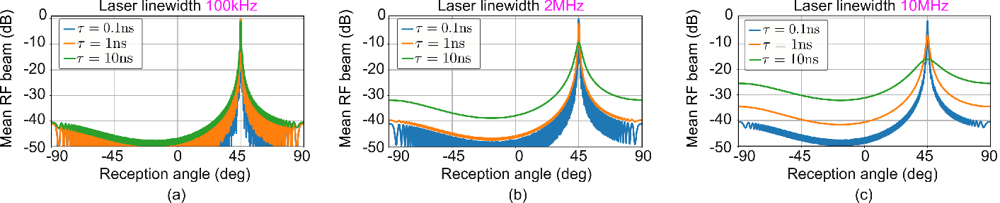
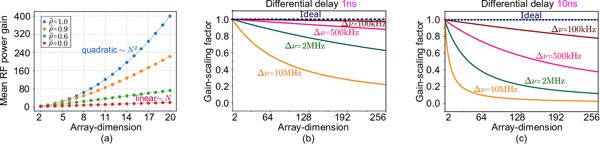
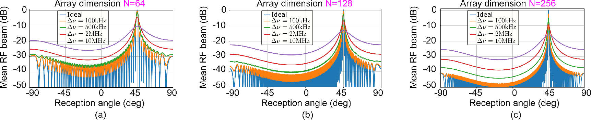
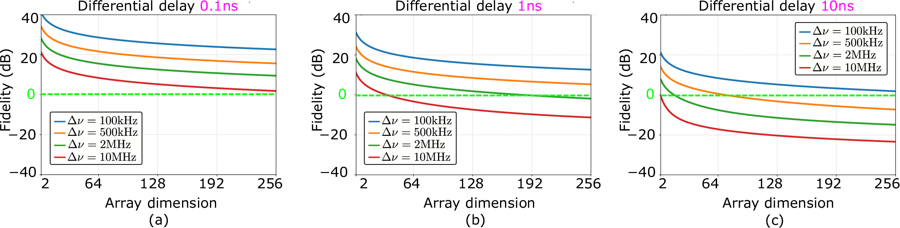
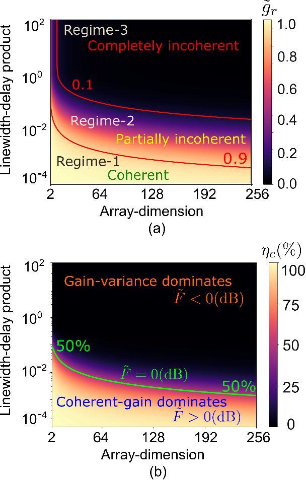

光子学辅助射频波束形成中激光相位噪声的随机分析
摘要
本文建立了用于量化激光相位噪声对光子学辅助射频（RF）波束形成影响的随机模型。与传统的确定性模型不同，本文提出的理论框架能够刻画由有限线宽激光器驱动的波束形成网络中 RF 阵列因子的统计随机性。傅里叶域分析表明，激光相位噪声会重塑此类波束形成网络的空间相干性函数，引起相干 RF 光阑收缩、波束方向图畸变和方向性退化。分析强调，即使由商用窄线宽（kHz 量级）激光器驱动，采用纳秒量级光差分时延的波束形成网络架构也可能出现显著的性能退化。 此外，研究表明，受相位噪声影响，平均 RF 功率增益被降低，并且在大光阑波束形成网络中波动占主导地位，从而对可实现的最大 RF 天线阵列规模施加了上限。所得结果凸显了激光相位噪声在光子学辅助 RF 波束形成中带来的定量性能与可扩展性限制，为在下一代无线通信、传感、雷达和射电天文应用中实现大规模波束形成网络提供了关键设计准则。
I 引言
波束形成是实现大容量无线通信、传感、雷达和射电天文的关键使能技术[1, 2, 3]。尽管数字波束形成具有很高的灵活性，但每个天线通道都需要专用的电子 RF 链路、模数转换器和数模转换器，这显著增加了硬件复杂度、功耗和成本[4]。另一方面，模拟波束形成缓解了这些挑战，但由于采用电子移相器，存在带宽受限、波束偏斜和电磁干涉等问题[5]。这些局限促使人们日益关注光子学辅助 RF 波束形成，它能够在实现宽带波束指向的同时将波束偏斜降至最低，且损耗低、对电磁干涉免疫。
光学真时延（OTTD）是光子学辅助 RF 波束形成网络的核心构建模块。采用多种光子技术实现 OTTD 延迟线已取得显著进展，包括基于光纤、基于波分复用、基于集成光子学以及基于微梳的方法[6, 7, 8, 9, 10, 11, 12, 13, 14, 15]。这些进展进一步推动了面向相控阵系统、基于 Butler 和 Blass 矩阵架构的集成化可重构多波束形成[16, 17, 18, 19]。
尽管光子学辅助射频波束成形网络的研制已取得显著进展，激光器相位噪声对此类系统的影响却鲜有关注。通常认为，由有限线宽激光器驱动的波束成形网络中，各光真延时（OTTD）通道之间具有理想的相位相干性。然而，这一假设从根本上说是不准确的，因为通道之间特意引入了可调差分延时以实现波束指向控制。这会使各OTTD通道的相位波动失去相关性，导致性能显著下降。尽管自零差检测可通过抵消公共相位波动来抑制相干光通信链路中激光器相位噪声的影响[20, 21, 22]，但该方法通常要求光通道之间的光程失配可忽略不计，因而无法直接应用于波束成形网络。目前仍缺少量化激光器相位噪声对射频波束成形影响的随机框架。
随着波束成形网络面向未来无线通信、传感和射电天文应用不断向更大天线阵列和更长光延时范围扩展，理解并分析激光器相位噪声的影响变得愈发关键。即使采用窄线宽激光器驱动，这类系统各OTTD通道之间也可能出现显著的相位去相关，从而限制其性能。因此，量化这些极限对于选择激光器规格、确定最大可实现阵列规模以及大规模光子学辅助射频波束成形网络的实际设计折衷至关重要。
本文建立了一个严格的随机框架，用于分析有限激光器线宽对光子学辅助射频波束成形网络的影响。与传统的确定性表述不同，所提框架将波束成形网络的射频阵列因子建模为由随机激光器相位噪声支配的随机过程。基于该表述，研究表明激光器相位噪声会重塑波束成形网络的空间相干性函数。傅里叶域分析指出，空间相干性函数的这种重塑会使波束成形网络的有效射频光阑缩小，导致射频波束方向图畸变、增益下降和方向性塌陷。分析进一步扩展到刻画激光器相位噪声对相干阵列增益、波束起伏和波束成形保真度等系统指标施加的限制，从而确立了系统性能与可扩展性的基本极限。此外，本文还给出了在有限激光器线宽条件下设计大规模光子学辅助射频波束成形系统的关键量化准则。
本文其余部分组织如下。第 II 节在系统存在激光相位噪声的情况下，建立基于光学真延时（OTTD）的射频波束成形的随机模型。第 III 节给出空间相干性函数的频域分析，以研究激光相位噪声对波束成形网络的相干光阑以及所得射频波束方向图的影响。第 IV 节分析差分延时与阵列维度对不同波束成形性能指标的影响，并讨论计入有限激光线宽后的相应设计启示。
II 光子学辅助射频波束成形在激光相位噪声下的随机建模
图 1 示出了工作在接收模式下的基于光学真延时（OTTD）的射频波束成形网络的示意图。该网络由一个由 个单元组成、单元间距为 的天线阵列构成。从方向 入射的射频平面波被该阵列接收，在第 根天线上产生如下射频电场：
| (1) |
其中 为电场强度， 为角频率， 为所接收射频信号的传播常数。

每根天线的输出首先由低噪声放大器（LNA）放大，随后驱动一个光强度调制器。所有调制器均由同一个频率为 、线宽为 的连续波激光源驱动。本文中，激光相位噪声 被建模为零均值维纳过程，该模型能准确描述实际半导体激光器的相位演化 [23]。表 1 汇总了本文所用的全部变量及其代表的参数。
系统中的光调制器按 [Mod1, Mod3….ModN-1, ModN] 编号。激光器输出端的光电场 被均分为 (+1) 路分支。前 路光分支驱动与天线耦合的调制器，而其余一路携带用于相干检测的光参考载波。我们把输入到第 个调制器（即 Modn）的光信号记为 =。Modn 用第 根天线接收的射频信号 对光信号 进行线性幅度调制，如图 2 所示。Modn 输出端所得的射频幅度调制光信号 可表示为：
| (2) |
各调制器输出的调制光信号随后经并行的光学真延时（OTTD）信道路由。各 OTTD 信道所引入的延时按 [, …., ] 编号。其中 = 为第 个 OTTD 信道的延时， 为信道间差分延时。第 个 OTTD 信道处经延时的调制光信号 可表示为：
| (3) |

由所有OTTD通道相干叠加相应得到的光信号为，
| (4) |


随后对光信号进行带通滤波，以保留中心位于上边带频率处的频谱分量。带通滤光片的光输出可表示为如下形式，
| (5) |
式中，上式中的常量为()，而是相邻两个OTTD通道之间的射频相位滞后，可表示为，
| (6) |
滤波后的光信号进一步进行载波恢复，即将其与来自参考载波线路的未调制信号=合并。其中，对应参考载波线路引入的时间延迟。最后，载波恢复后的光信号=进行光电检测。由此可推导出光电探测器输出的归一化射频光电流为，
| (7) |
式(7)构成了随机系统模型的核心结果。在不存在激光相位噪声时，(7)中的随机指数项化为1，所检测到的光电流对应于常规的确定性射频阵列因子[24]。然而，在有限的激光线宽下，波束成形网络OTTD通道中引入的差分延迟会使激光相位在各通道之间去相关。因此，射频阵列因子成为一个随机量，其统计特性由激光线宽与OTTD通道延迟共同决定。这一随机表述构成了本文后续内容的核心基础。借助所推导的公式，我们将在接下来的章节中研究激光相位噪声对射频波束成形的影响。
| Sl. | Variable | Parameter |
|---|---|---|
| 1 | 激光相位噪声随机过程 | |
| 2 | 激光的光谱线宽 | |
| 3 | Delay of OTTD channel | |
| 4 | 相邻通道之间的差分延迟 | |
| 5 | RF reception angle | |
| 6 | 射频波束最大值方向 | |
| 7 | 通道间射频相位滞后 | |
| 8 | 射频场阵列因子随机过程 | |
| 9 | 射频功率阵列因子随机过程 | |
| 10 | 平均射频功率阵列因子 | |
| 11 | 与通道之间的平均相关性 | |
| 12 | 相邻通道之间的平均相关性 | |
| 13 | 空间相干性函数 | |
| 14 | Spatial index | |
| 15 | Mean RF power gain | |
| 16 | Gain-scaling factor | |
| 17 | 平均相干阵列增益 | |
| 18 | Gain variance | |
| 19 | Beamforming fidelity |
III 激光相位噪声对射频波束成形的影响
III.1 通道间相干性衰减
本小节中，我们表征波束形成网络各光学真时延（OTTD）通道之间由激光相位噪声引起的相干性衰减。为此，我们首先推导射频（RF）功率阵因子的统计特性。由式(7)给出的随机射频场阵因子，可推得相应的射频功率阵因子 = 为，
| (8) |
式(8)中的随机项 来源于激光相位噪声引起的、所有 的 与 OTTD通道之间的相位去相关。平均射频功率阵因子 可推导为（见附录 A），
| (9) |
其中参数 用于量化 与 OTTD通道之间的平均相关性，它与相应通道间的延迟差 以及激光器线宽 的关系为，
| (10) |
与 OTTD通道之间的关系为：(a) 若 =1，则完全相关；(b) 若 ，则部分不相关；(c) 若 =0，则完全不相关。 式(10)表明，线宽-延迟乘积 是控制波束形成网络全部通道空间相干性的主导参数。延迟差越大的通道之间互相关性越弱，而相邻通道之间仍保持较强的相关性。
下面给出的相关矩阵 可直观展示波束形成网络中不同 OTTD通道之间由线宽-延迟乘积决定的相干性损失，
| (11) |
在理想相干极限 ) 下，所有通道保持相互相干，矩阵趋近于全 1 形式。随着线宽-延迟乘积增大，非对角元呈指数衰减，使矩阵系数集中于主对角线附近。图 3 和 4 展示了不同激光器线宽与差分延迟下这一演变过程。增大其中任一参数都会加剧网络内长程相干性的损失，表明只有相邻的 OTTD通道仍近似相互相干。
下一小节将给出激光所致相干性衰减的傅里叶域解释，并揭示由此产生的影响，例如相干射频光阑收缩与波束方向图恶化。
III.2 空间相干函数重塑的傅里叶域分析
引入空间索引变量 = 后，平均射频功率阵因子 可按空间相干函数 展开如下，
| (12) |
空间相干函数 用于量化延迟差为 的所有 OTTD通道对之间的平均累积相关性，其中索引 。由于一个 元阵列中由索引 分隔的 OTTD通道对共有 个，其平均互相关性为 ，因此相干函数可表示为，
| (13) |

式(12)确立了本文的核心：空间相干性函数与平均射频波束图构成一对傅里叶变换。因此，波束形成网络上的空间相干性分布直接决定最终的波束图。长程相干性的任何减弱都会转化为有效相干射频光阑的收缩，并进而导致波束畸变。为验证这一论点，我们讨论以下几种情形：
III.2.1 理想相干系统
III.2.2 部分非相干系统
在部分非相干波束形成网络中，相邻通道之间的平均相关性位于范围内。对于此类系统，相干性函数可表示为有限线宽-延时乘积的函数，如下所示
| (16) |
由上式可知，部分非相干系统的空间相干性分布呈指数型轮廓，这一点可由图5(a)(=0.9：橙色点，=0.6：绿色点)验证。空间相干性分布的指数型锥削会导致天线阵列有效射频光阑的收缩。此外，与通道间相关性相对较大的系统(=0.9)相比，通道间相关性较差的系统(=0.6)遭受的有效光阑收缩更大。
III.2.3 完全非相干系统
在完全非相干的波束成形网络中，各OTTD（光学真时延）信道彼此不相关，即=0。对于这类系统，空间相干性函数可简化为，
| (18) |

式(18)表明，在完全非相干系统中，只有单个OTTD信道的自相关对空间相干性函数有贡献。因此，空间相干性函数唯一的非零分量出现在=0处，如图5(a)所示（=0：蓝色点）。这说明，完全非相干波束成形网络的有效射频光阑收缩最为严重。


因此，相应空间相干性函数的傅里叶域表示可推导为，
| (19) |
式(19)表明，在完全非相干系统中，有效射频光阑的收缩极为严重，以至于所得射频波束图样不再具有空间指向性。这一点还可由图5(b)中的归一化波束图样进一步验证（=0：蓝色曲线）。
本小节的分析表明，线宽—延迟乘积决定波束成形网络空间相干性函数的形状，而该函数又通过(12)中建立的傅里叶关系决定射频波束图。增大激光器线宽或相邻信道间的差分延迟会产生相同的定性效应：光阑逐渐收缩、波束方向性降低、主瓣展宽以及波束成形增益下降。图6所示的波束图验证了这些预测。图6(a)给出了一个部分非相干系统的归一化平均射频波束图（以dB为单位），该系统的波束峰值设计位于=，由线宽=100kHz的激光器驱动，对应不同的差分延迟。可以注意到，当差分延迟从=0.1ns逐步增大到=10ns时，波束峰值下降与方向性损失变得愈发显著。如图6(b)所示，当系统由线宽相对较宽的=2MHz激光器驱动时，这些不利影响变得更加严重。图6(c)中，对于更宽的激光器线宽=10MHz，也可以观察到类似的趋势。这说明，随着线宽—延迟乘积的增大，系统从近似理想的相干波束成形逐渐过渡到严重劣化的工作状态。这为下一节中的性能与可扩展性分析提供了物理基础。
IV 波束成形保真度分析
IV.1 射频功率增益下降
| Regime | 平均信道间相关性（） | Mean RF power gain () | Gain-scaling factor ( |
|---|---|---|---|
| Ideal coherent | =1 | = | =1 |
| Partially incoherent | = | ||
| Completely incoherent | =0 | = | = |
在上一节中研究了激光器相位噪声对射频波束图的影响之后，我们现在将量化其对波束成形网络最关键性能指标之一——可实现射频功率增益——的影响。对于部分非相干波束成形网络，平均射频功率增益==可以推导如下（见附录C）：
| (20) |
式（20）表明，对于线宽-时延乘积为零的理想相干波束成形网络，平均增益随阵列规模呈二次方增长，即 =。这一点可以从图 7(a) 中 =1 时平均射频功率增益随阵列规模变化的曲线得到验证。然而，（20）还预测，对于线宽-时延乘积非零的部分非相干系统，平均增益会偏离阵列规模的二次函数关系。图 7(a) 所示 =0.9 与 =0.6 的曲线可以验证这一点。还可以观察到，与 =0.9 的系统相比，=0.6 的系统的上述偏离更大。在最坏情况下，即对于线宽-时延乘积极大的完全非相干系统，增益趋于随阵列规模线性增长，如图 7(a) 中 =0 所示。因此，线宽-时延乘积会影响波束成形网络的射频增益标度。为突出这一效应，我们引入称为增益标度因子的参数，它以理想增益对实际增益进行归一化，即 =。增益标度因子的表达式为：
| (21) |
显然，对于理想相干系统，增益标度因子是阵列规模的常数函数，如图 7(b)-(c) 所示。相反，对于部分非相干系统，增益标度因子随阵列规模增大而下降，这同样可以从图 7(b)-(c) 中得到验证。此外可以注意到，随着激光器线宽和（或）时延的增大，增益下标度更加陡峭。一个尤为重要的结果是：当系统趋近非相干区域时，增益下标度渐近地趋于与阵列规模成反比，即 。
激光器相位噪声引起的增益下标度表现为归一化平均射频波束峰值的下降，如图 8(a)-(c) 所示。可以观察到，图 8(a) 中阵列规模 =64 的波束成形网络，其归一化波束峰值的下降小于图 8(b) 中阵列规模 =128 的情况。类似地，图 8(c) 表明，对于规模更大的 =256 阵列，波束峰值劣化更为严重。该分析表明，仅仅增加射频阵列中的天线数量无法补偿激光器相位噪声引起的相干性损失。超过某一阵列规模后，新增单元提供的相干增益越来越少，而实现复杂度却不断上升。
表 2 总结了在按平均信道间相关性分类的不同工作区域下，平均功率增益和增益标度因子随阵列规模变化的情况。接下来的小节将研究增益下标度背后的物理原因，及其对系统可扩展性和性能的相应影响。
IV.2 相干阵列增益劣化与涨落分析
仅凭总平均增益的下降还不足以完整刻画波束成形的保真度。同样重要的是，把确定性阵列相干增益与激光器相位噪声引入的随机增益波动区分开来。上一小节讨论的总平均射频功率增益包含两个组成部分：(i)平均相干阵列增益，以及(ii)增益方差。其表示为如下公式：
| (22) |
平均相干阵列增益=是总平均射频增益中，由OTTD网络内射频调制光场之间的相干干涉所贡献的那部分份额。平均相干阵列增益可推导如下：
| (23) |

我们引入参数来量化波束成形保真度，它本质上是平均相干阵列增益与增益方差的比值：
| (25) |
图9(a)-(c)表明，保真度随线宽、差分延时和阵列规模的增大而下降。绿色点线对应于=时=0的阈值界限。一旦保真度越过0dB阈值，相干波束成形便不再可能，因为此时随机波动已压倒有用的相干阵列增益。
从图9(a)-(c)中还能观察到一个更有意思的现象：随着阵列规模增大，趋近于0极限。其原因在于，在维数更高的非相干系统中，不相关OTTD通道的数量相对更多。因此，增大阵列规模会使相干阵列增益下降、增益方差增大，进而使保真度下降并最终达到0极限。
IV-A节和IV-B节表明，激光器相位噪声通过三个密切相关的机制从根本上限制了基于OTTD的射频波束成形网络的性能：相干阵列增益降低、增益波动增大以及波束成形保真度退化。这些效应共同对允许的线宽—延时乘积和最大可扩展阵列规模设定了实际限制。在上述结果的基础上，下一小节将分析整合为实用的性能界限与设计准则，把激光器线宽、差分延时和阵列规模联系起来。
IV.3 性能界限与可扩展性极限
前面的分析表明，激光器线宽、差分延时和阵列规模共同决定波束成形性能。现在我们把这些参数组合成实用的设计图谱，用以确定OTTD波束成形网络的工作区域与可扩展性极限。
图10(a)总结了归一化总平均射频功率增益随线宽—延时乘积和阵列规模共同变化的关系。以偏离理想增益10作为设计准则，参数空间自然划分为(i)相干（）、(ii)部分相干（）和(iii)非相干（）三个工作区域。

图10(b)给出了相干增益比=随线宽—延时乘积和阵列规模共同变化的关系，作为该分析的补充。由式（22）和（25）可以验证，当相干增益为增益方差的时，相干—方差比达到0dB极限。这进一步表明， (i)当0且时，平均相干阵列增益主导于增益方差；(ii)当0且时则相反。图10(b)所示的等高线图给出了线宽—延时乘积与阵列规模的组合范围，在这些组合下相干波束成形仍主导于随机增益起伏。
这些等高线图提供了直观的设计准则。对于给定的激光器线宽，它们确定了所允许的最大差分延时，因而在保持所需波束成形保真度的前提下确定了可支持的最大波束偏转范围。反过来，对于给定的延时架构，同样的图谱规定了实现目标阵列规模所需的最小激光器相干性。因此，它们可作为未来大规模光子波束成形系统的实用设计工具。
V 结论
本文建立了一个随机分析框架，用于研究有限激光器线宽对基于OTTD的射频波束成形网络的影响。与传统的确定性分析不同，所提公式将射频阵列因子建模为随机过程，揭示出激光器相位噪声从根本上重塑了光子波束成形网络的空间相干性函数。通过傅里叶域分析表明，空间相干性函数的重塑会导致有效光阑减小、波束方向性退化、相干阵列增益降低以及增益起伏增大。这是本工作的核心创新点。分析进一步表明，随着差分延时和阵列规模的增大，这些效应愈发显著，最终限制了光子波束成形网络的可扩展性。本工作通过量化激光器线宽、差分延时和阵列规模之间的相互作用，确立了基本性能极限，为面向下一代无线通信、传感、雷达和射电天文的大规模光子波束成形系统设计提供了严格的理论基础。所建立的框架为将激光器相位噪声纳入未来大规模光子波束成形网络的设计与优化奠定了基础，在这类系统中，相干性而非仅带宽成为系统可扩展性的根本决定因素。
附录 A 平均射频功率阵列因子的推导
附录 B 部分非相干系统平均射频波束方向图的推导
附录 C 平均射频功率增益的推导
本附录推导平均射频功率增益的闭式表达式。它可以通过在波束最大值处计算式(28)中的平均射频功率阵列因子得到，如下式所示：
| (30) |
附录 D 平均相干阵列增益的推导
References
- [1] A. M. Elbir, K. V. Mishra, S. A. Vorobyov, and R. W. Heath, Twenty-Five Years of Advances in Beamforming: From convex and nonconvex optimization to learning techniques, IEEE Signal Processing Magazine 40, 118 (2023).
- [2] Zhao, Feiyu and Guo, Quan and Gu, Junhua and Zheng, Qian and Huang, Yan and Yu, Yun, Simulation and data processing of beamforming experiments with four 21CMA stations, Research in Astronomy and Astrophysics (2026).
- [3] S. Dongre, T. M. Hoang, H. Rahbari, and A. Vahid, Robust and Practical 3D RFI Nulling for 5G and Radio Astronomy Coexistence, IEEE Transactions on Cognitive Communications and Networking (2025).
- [4] S. Dutta, C. N. Barati, D. Ramirez, A. Dhananjay, J. F. Buckwalter, and S. Rangan, A Case For Digital Beamforming at mmWave, IEEE Transactions on Wireless Communications 19, 756 (2019).
- [5] D. Marpaung, J. Yao, and J. Capmany, Integrated Microwave Photonics, Nature photonics 13, 80 (2019).
- [6] F. Duan, Y. Guo, Z. Gu, Y. Yin, Y. Wu, and T. Chen, Optical beamforming networks for millimeter-wave wireless communications, Applied Sciences 13, 8346 (2023).
- [7] B.-M. Jung, J.-D. Shin, and B.-G. Kim, Optical true time-delay for two-dimensional -band phased array antennas, IEEE photonics technology letters 19, 877 (2007).
- [8] P. Martinez-Carrasco, T. H. Ho, D. Wessel, and J. Capmany, Ultrabroadband high-resolution Silicon RF-photonic beamformer, Nature Communications 15, 1433 (2024).
- [9] A. Yu, W. Zou, S. Li, and J. Chen, A multi-channel multi-bit programmable photonic beamformer based on cascaded DWDM, IEEE Photonics Journal 6, 1 (2014).
- [10] X. Xue, Y. Xuan, C. Bao, S. Li, X. Zheng, B. Zhou, M. Qi, and A. M. Weiner, Microcomb-based true-time-delay network for microwave beamforming with arbitrary beam pattern control, Journal of lightwave technology 36, 2312 (2018).
- [11] C. Zhang, P. Lei, R. Liu, B. He, Z. Chen, X. Xie, and W. Hu, Large-scale true-time-delay remote beamforming with EO frequency combs and multicore fiber, Optics Letters 46, 3793 (2021).
- [12] H. Sun, L. Lu, Y. Liu, Z. Ni, J. Chen, and L. Zhou, Broadband 1 8 optical beamforming network based on anti-resonant microring delay lines, Journal of Lightwave Technology 40, 6919 (2022).
- [13] Y. Gao, A. Wen, Z. Tu, W. Zhang, and L. Lin, Simultaneously photonic frequency downconversion, multichannel phase shifting, and IQ demodulation for wideband microwave signals, Optics Letters 41, 4484 (2016).
- [14] C. Porzi, F. Falconi, G. Parca, L. Ansalone, P. Ghelfi, and A. Bogoni, Fast-reconfigurable microwave photonics phase shifter using silicon microring resonators, IEEE Journal of Quantum Electronics 57, 1 (2021).
- [15] G. Serafino, C. Porzi, B. Hussain, F. Scotti, F. Falconi, M. Chiesa, V. Toccafondo, A. Bogoni, and P. Ghelfi, High-performance beamforming network based on Si-photonics phase shifters for wideband communications and radar applications, IEEE Journal of Selected Topics in Quantum Electronics 26, 1 (2020).
- [16] P. Lu, W. Xu, C. Zhu, C. Liu, L. Lu, L. Zhou, and J. Chen, Integrated multi-beam optical phased array based on a 4 4 butler matrix, Optics letters 46, 1566 (2021).
- [17] Z. Zhou, W. Xu, C. Liu, R. Xu, C. Zhu, X. Li, L. Lu, J. Chen, and L. Zhou, Butler matrix enabled multi-beam optical phased array for two-dimensional beam-steering and ranging, Photonics Research 12, 912 (2024).
- [18] M. Reza, G. Serafino, T. Otto, A. Mohammad, H. Mohammadhosseini, L. Shiramin, F. Floris, M. Kolb, D. Bail, S. Gabrielli, et al., Design and performance estimation of a photonic integrated beamforming receiver for scan-on-receive synthetic aperture radar, Journal of Lightwave Technology 39, 7588 (2021).
- [19] E. Loukisa, E. Andrianopoulos, G. Megas, A. Raptakis, D. Gounaridis, A. Grammatikaki, R. B. Timens, P. v. Dijk, P. Groumas, C. Tsokos, et al., Blass Matrix-Based Optical Beamforming Network for Single-and Multi-Beam Operation on a Silicon Nitride Photonic Integrated Circuit, Journal of Lightwave Technology 44, 1800 (2026).
- [20] M. Morsy-Osman, M. Sowailem, E. El-Fiky, T. Goodwill, T. Hoang, S. Lessard, and D. V. Plant, DSP-free ‘coherent-lite’transceiver for next generation single wavelength optical intra-datacenter interconnects, Optics Express 26, 8890 (2018).
- [21] S. Ghosh, T. Suganuma, S. Ishimura, Y. Nakano, and T. Tanemura, Complete retrieval of multi-level Stokes vector signal by an InP-based photonic integrated circuit, Optics express 27, 36449 (2019).
- [22] A. Mecozzi, C. Antonelli, and M. Shtaif, Kramers–Kronig coherent receiver, Optica 3, 1220 (2016).
- [23] G. P. Agrawal, Fiber-optic communication systems (John Wiley & Sons, 2012).
- [24] C. A. Balanis, Antenna theory: analysis and design (John wiley & sons, 2016).
- [25] T. Okoshi and K. Kikuchi, Coherent optical fiber communications, Vol. 4 (Springer Science & Business Media, 1988).
- [26] S. Ishimura, Y. Nakano, and T. Tanemura, Impact of laser phase noise on self-coherent transceivers employing high-order QAM formats, Journal of Lightwave Technology 39, 6150 (2021).